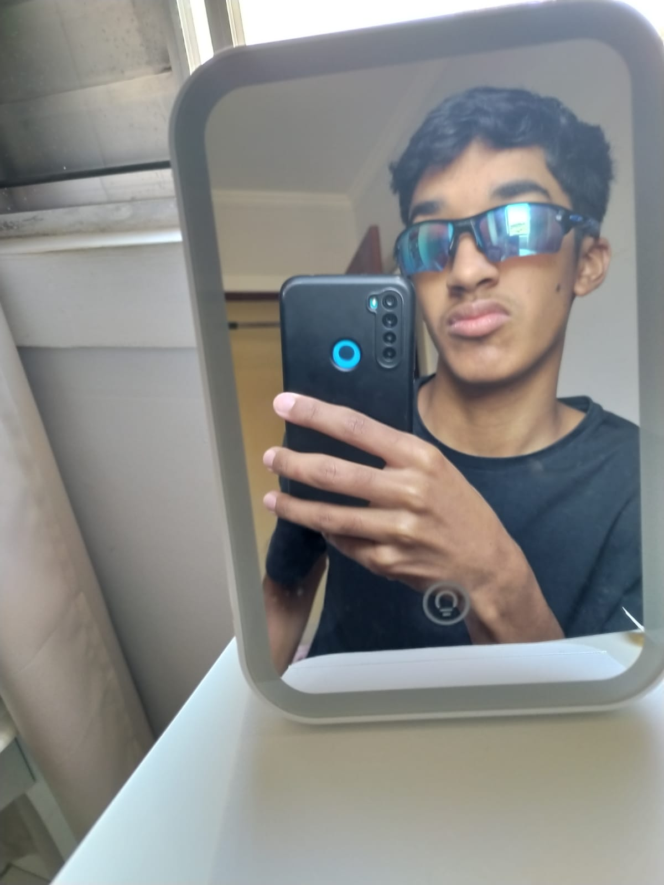
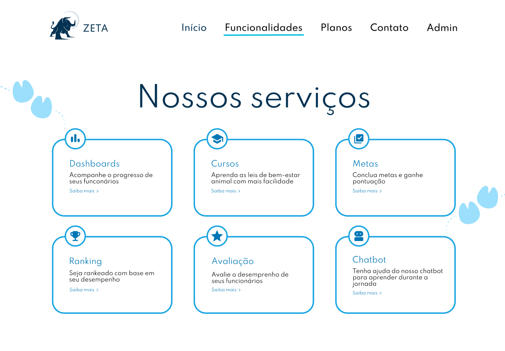
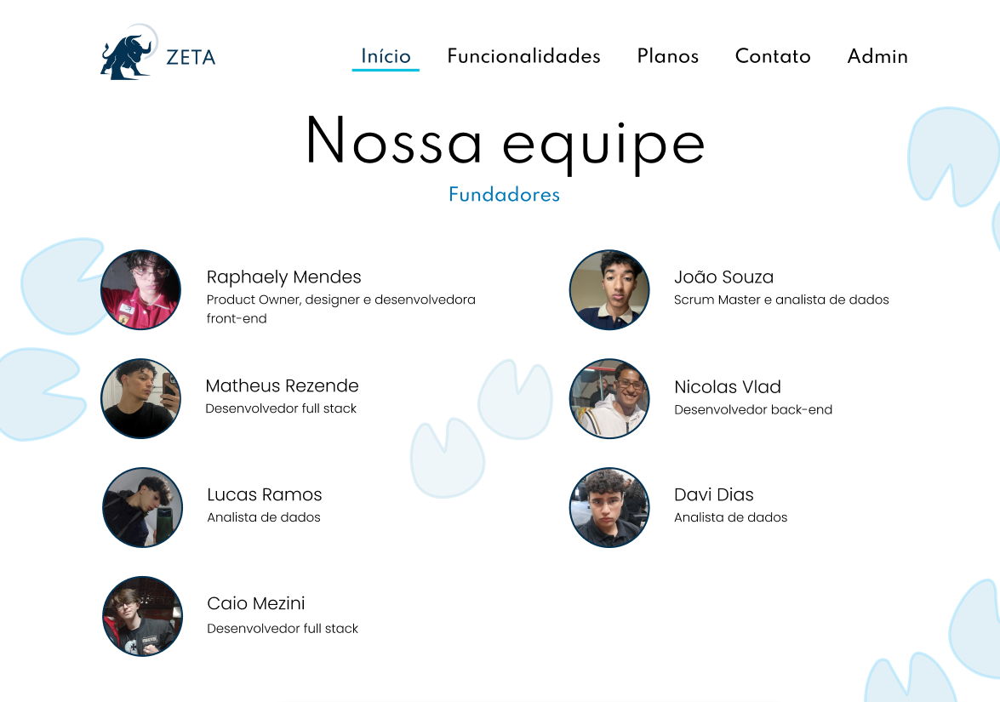
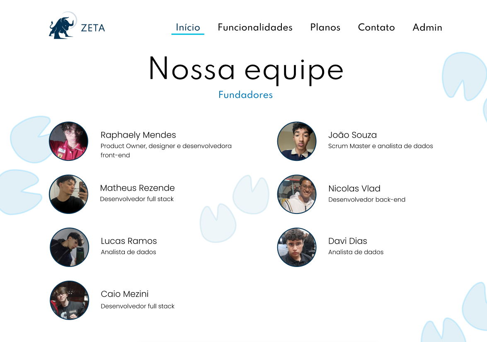
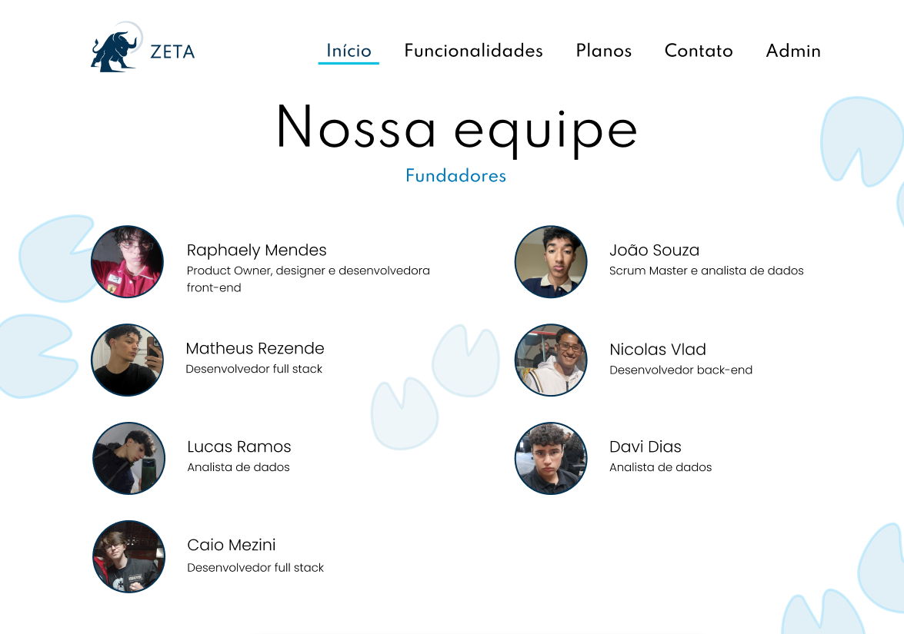

Quem eu sou?
Olá, pessoal! Meu nome é João Souza, tenho 16 anos e sou de Osasco-SP.
Estudo na Germinare Tech e estou amando me aprofundar em tecnologia, principalmente na área de Back-End e Dados.
Fotos



Curiosidades sobre mim:
- Sou Santista
- Toco Violão e Baixo
- Sou apaixonado por Quadrinhos e Filmes de Heróis
- Gosto de jogar Basquete e andar de Bike


Lugares que eu ja visitei:
- Amparo-SP => Fui na fabrica Seara
- Ubatuba-SP => Fui passear de barco
- Trindade-RJ => Fui conhecer a cidade
- Consolação-SP => Fui conhecer a Av.Paulista


Minhas Habilidades/Tecnologias que mais uso:
Python 60%
Java 90%
SQL 75%
Meu Projeto Interdisciplinar
Participo do projeto ZETA, um app que fornece interpretações das leis de bem-estar animal por meio de quizzes interativos.

 


Aulas Práticas
Fui um dos 35 alunos convocados para iniciar as aulas práticas na empresa PicPay. Estou animado para crescer e me desenvolver como profissional. Sou do time de Engenharia de Plataforma, trabalho com automatizações em python e extração de dados com SQL, também fazemos manutenção no back end da nossa plataforma de Dados.